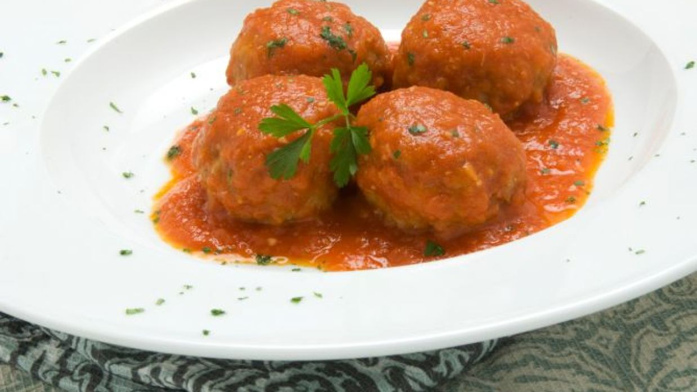
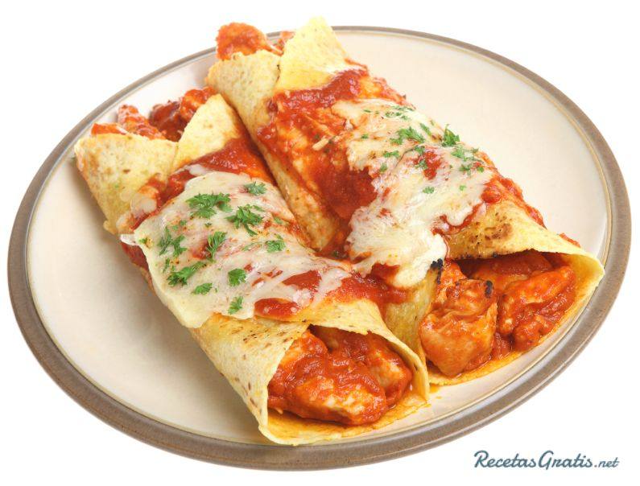
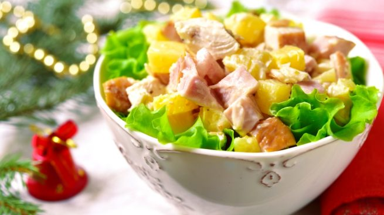
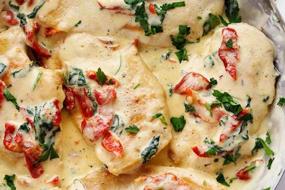

HERBER PARADA!
6TO PERITO CONTADOR

1 libra de carne molida magra (15% de grasa)
1⁄2 taza de arroz integral o blanco, sin cocinar
2⁄3 de taza de leche 1% o sin grasa
1 huevo, ligeramente batido
1⁄2 taza de cebolla, picada (1⁄2 cebolla mediana)
1⁄2 taza de zanahorias ralladas
1⁄2 cucharadita de sal
1⁄4 de cucharadita de pimienta.

2 latas (15 onzas) de frijoles pintos, escurridos y enjuagados
1⁄2 taza de salsa
1 1⁄2 taza de elote cocido (fresco o congelado o una lata de 15 onzas escurrida)
1⁄2 taza de chiles verdes picados (una lata de 4 onzas)
2 dientes de ajo, picados muy finamente, o 1/2 cucharadita de ajo en polvo
1 1⁄2 taza de queso rallado
8 tortillas de harina de trigo integral (10 pulgadas) o 12 tortillas de maíz (6 pulgadas)
1 lata (15 onzas) de salsa para enchiladas.

1 1⁄2 taza de pavo cocinado o pavo ahumado, cortado en trozos
1⁄2 taza de nueces tipo “walnuts”, tostados y picados
1⁄2 taza de pasas u otra fruta deshidratada
3⁄4 de taza de apio picado (aproximadamente 1.5 tallos)
1⁄4 de taza de cebolla roja o blanca, picada (1/4 cebolla mediana)
1⁄4 de taza de zanahorias picada
1⁄4 de taza de perejil picado (opcional)
1 manzana grande roja, sin corazón y picada
1⁄3 de taza de mayonesa baja en grasa
1 cucharada de vinagre (de sidra, rojo o blanco)

1 salsa Natura`s® premium tradicional de 430gr
2 sabrosador Continental® de pollo completo
2 cucharadas de margarina Mirasol®
4 piezas de pollo
1 cebolla morada picada
1 chile rojo picado
1 taza de agua
4 dientes de ajo finamente picados
½ taza de aceitunas negras
3 cucharadas de jugo de limón
1 pizca de cúrcuma
Pizca de pimienta